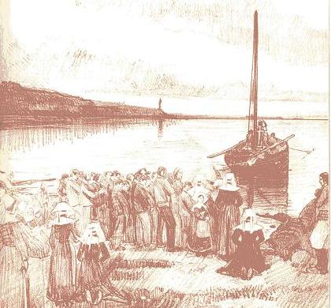
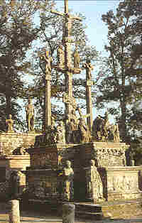

Les Bleus
The Blue Coats
Dialecte de Cornouaille
|
De plus 7 strophes sont tirées ou adaptées du chant "Louis XVI" , pages 19-20 et 8 strophes, du chant "Chouanted" , page 107 dudit carnet (imprimées ci-après en caractères gras ). L'équivalent de 10 strophes semble être une composition de La Villemarqué lui-même. Ni Luzel, ni Joseph Loth (comme le remarque Francis Gourvil dans une note, p. 402 de son "La Villemarqué") ne rangent ce chant historique dans la catégorie des chants inventés . Aeled eus ar baradoz, zellet pebezh enor A ra dimp er Zakremant Jezuz, hon Redemptor : Ur wech evit hon prenañ, ec’h eo bet inkarnet, Hag evit dont d’hon magañ ganimp e chom bepred ! Mari, gwir Vamm da Jezuz, Mari, ma Mamm dener, Ma zikouret da resev ho Mab, ha ma Zalver : Me na n’on siwazh netra, netra nemet pec’hed ; Mes ennoc’h ec'h esperan, o ma Mamm benniget. Krouer an neñv, an douar war an aoter bemdez, Dre gomz nerzhus ar beleg, a ziskenn a nevez ; Un Doue kalz uheloc’h evit ar firmamant ‘N em izela dindan spesoù ar Zakramant. *** Anges du paradis, regardez, O regardez quel honneur Nous fait dans le très saint Sacrement, Jésus notre rédempteur: Afin de nous racheter, Il a daigné s'incarner, Se donner en nourriture, être avec nous à jamais! O Marie, vraie mère de Jésus, tendre mère, que mon coeur Reçoive, avec ton aide, ton Fils, ton Fils et mon Sauveur! Moi qui pourtant ne suis rien, rien hélas, que péché, Mais en toi, mère bénie, tout mon espoir j'ai placé. Créateur de la terre et du ciel, Toi qui chaque jour descends A l'appel du prêtre sur l'autel, à ses mots saints et puissants, Ce Dieu plus sublime encore que n'est le firmament S'abaisse sous les espèces de ce très saint Sacrement. |
 Santez Mari gwir vamm da Zoue (Kanet gant "Kaloneu derv Bro Pondi") Aeled eus ar baradoz (Skrid gant Paotr Treoure, kanet gant Y-F. Kemener) |
Besides 7 stanzas are adapted from the song "Louis XVI" , pages 19-20 and 8 stanzas of the song "Chouanted" , on page 107 of the 2nd notebook (printed below in bold type ). The equivalent of 10 stanzas seems to be a composition by La Villemarqué himself. Neither Luzel nor Joseph Loth (as stated by Francis Gourvil in a note on page 402 of his "La Villemarqué") includes this historical song on the list of the songs invented by La Villemarqué. Aeled eus ar baradoz, zellet pebezh enor A ra dimp er Zakremant Jezuz, hon Redemptor : Ur wech evit hon prenañ, ec’h eo bet inkarnet, Hag evit dont d’hon magañ ganimp e chom bepred ! Mari, gwir Vamm da Jezuz, Mari, ma Mamm dener, Ma zikouret da resev ho Mab, ha ma Zalver : Me na n’on siwazh netra, netra nemet pec’hed ; Mes ennoc’h ec'h esperan, o ma Mamm benniget. Krouer an neñv, an douar war an aoter bemdez, Dre gomz nerzhus ar beleg, a ziskenn a nevez ; Un Doue kalz uheloc’h evit ar firmamant ‘N em izela dindan spesoù ar Zakramant. *** O Angels of paradise, what honour was given us When in the holy Sacrament: our Saviour Jesus, In order to redeem us, has become incarnate, for Us, to give Himself as food, be with us forevermore! O Mary, Jesus' mother dear, O tender mother of mine, O give me your help to receive your Son, Lord Savior divine! Although I am nothing, alas, nothing but indignant sin, In you, all my hope I have placed, my hope has always been. Of heaven and earth's creator, who cometh down every day At the priest's mighty call upon the altar, to Thee we pray This God who's loftier still than endless firmament Has humbled Himself to become this holy Sacrament. |
Mélodie - Tune
(Mode dorien).
| Français | English |
|---|---|
|
(Les strophes en caractères standards sont reprises sans modifications majeures des "Bleus- Ar re glas", Carnet N°2, pp. 206 à 209.
Les strophes en vert n'ont pas de correspondance dans le carnet N°2. Strophe en car. gras adaptée de "Les Chouans - Harzal a ra 'r chas", Carnet N°2, p. 105): 1. Les voilà, les soldats français! J'entends les chiens qui aboient. Chassons devant nous nos troupeaux, réfugions-nous dans les bois! 2. Cornouaillais, nous faudra-t-il toujours souffrir ce malheur, Toujours souffrir des brigands qui oppriment les laboureurs? 3. Ils violent nos filles, ils tuent mères, pères et enfants A cause de leurs mains blanches , les malades innocents. 4. Ils brûlent la maison du pauvre et abattent le château; Ils brûlent les blés et les foins, dans les champs, sur les coteaux . 5. Dans nos vergers les arbres qu'ils coupent servent à leurs feux; Il n'y aura pommes, ni cidre une décennie ou deux.. 6. Les vaches, les génisses et les boeufs qu'ils nous ont volés, Avec leurs maîtres sont conduits vers les villes au boucher. 7. Ils ont pillé l'or des églises, et abattu nos clochers, Nos ossuaires sont détruits, les reliques dispersées. 8. Les vallées de Basse Bretagne, où nous paissions nos bestiaux Ne résonnent plus de la voix de l'homme, ni des troupeaux. 9. Si seulement nous pouvions ver- ser des larmes librement! Mais dès qu’il voit des pleurs couler, l’intrus fait couler le sang ! 10. Au moins si nous avions la croix où pouvoir s'agenouiller Pour solliciter de Dieu la force qui nous manquait! 11. Mais Votre croix sainte, partout, ils l'ont abattue, mon Dieu, Et la "croix de la bascule" a été dressée en tout lieu. 12. Chaque jour on voit vos prêtres, comme vous sur le Calvaire, Comme vous, incliner la tête en pardonnant à la terre. 13. Ceux d'entre eux qui purent s'enfuir se sont cachés dans les bois; La nuit ils y disent la messe, en bateau sur mer, parfois. 14. D'autres, traversant l'océan, préfèrent partir sans rien, Pour servir Dieu plutôt que de plier devant des vauriens; 15. Manger en paix du pain d'avoine, après avoir fui nos ports, Plutôt que pain de blé du diable, accablés par le remords 16. Les prêtres jureurs vivent du bien pris à de pauvres gens; Après avoir comme Judas, vendu Dieu, pour de l'argent. 17. Celui qui ne veut pas aller voir le jureur est certain, Qu'il soit noble ou bien paysan, qu'il devra mourir demain. 18. Nobles et gens d'église, pa- ysans portant le front droit, Tous les Bretons persécutés pour le Christ et pour leur foi. ( Strophes en car. gras transcrites de Louis XVI , pp.19-20 st.9 & 13-18): 19. Hâte-toi donc, proie de l'enfer, de profiter de ta joie, Alors que nos anges au ciel pleurent à cause de toi 20. Qui substituas la loi du diable à la divine et vraie loi, Qui as tué les prêtres et les nobles ainsi que le Roi! 21. Qui as tué la Reine et fait rouler à terre sa tête, Avec la tête blonde de sa soeur, dame 'Elisabeth; 22. Qui jetas dans un vil cachot le fils du roi, pauvre enfant , Et l'y laisses mourir captif dans la fange et l'excrément. 23. Voile ton front, soleil béni, à la vue de tant de crimes Que l'on ne commet qu'inspiré par les puissances malignes. 24. Adieu, Jésus, Marie, dont les statues sont décapitées; Elles ont servi aux Bleus pour revêtir les rues pavées. 25. Adieu, adieu, fonts baptismaux, où nous fut jadis donnée La force de mourir plutôt que subir l'iniquité. 26. Adieu, cloches bénies, qui sur nos têtes, chantiez jadis. Les dimanches et fêtes vous n'annoncerez plus l'office. 27. Finis vos chants joyeux, hélas, vous êtes débaptisées. Les citadins vous ont fondues pour faire de la monnaie. 28. Adieu, jeunes Bretons qu'ils en- rôlent dans leurs compagnies, Où vous perdez en même temps et votre foi et la vie. 29. Adieu, mon fils, au revoir dans la vallée de Josaphat: Quand tu seras loin de la Bre- tagne, qui me défendra ? 30. Quand les citadins envahi- ront ma maison, je dirai: "Si j'avais encore chez moi mon fils, il me défendrait." 31. - Viens dans les bras de ta mère qui t'a porté, pauvre fils; Avant que je ne meure, viens sur le sein qui t'as nourri. 32. Lorsque tu reviendras, crois-moi, ce monde j'aurai quitté; Approche une dernière fois, car je voudrais t'embrasser. ( Strophes en car. gras transcrites de Chouanted , pp.107 st. 1-10): 33. - Père, mère, ne pleurez point, je ne vous quitterai pas. Je reste, vous et mon pays, pouvez compter sur mon bras. 34. Il est cruel d'être opprimé, mais cela n'est pas honteux. Comme l'est la soumission à des lâches et des gueux. 35. Et s'il faut aller au combat, ce sera pour le pays; S'il faut mourir, je mourrai, libre et joyeux, mourant pour lui. 36. Hors de portée des balles pour- quoi mon âme craindrait-elle?. Si mon corps tombe à terre, elle s'élèvera vers le ciel. 37. Enfants de Bretagne, en avant! Mon coeur est comme un tison, Que mes forces aillent croissant. Que vive la religion! 38. Vive qui chérit son pays! Et vive le fils du Roi! Que les Bleus aillent voir s'il est un Dieu dans l'au-delà. 39. Donner vie pour vie, mes amis, tuer ou être tué! Dieu lui-même a dû mourir pour que le monde soit sauvé. 40. Viens. Sois notre chef, Tinténiac, à tout jamais, vrai Breton! Toi qui n'a jamais flanché de- vant la gueule du canon! 41. Gentilshommes, guidez nos rangs, sang royal de la contrée; Et Dieu sera glorifié par les chrétiens du monde entier. 42. A la fin, en Bretagne, se- ra restaurée la vraie loi, Dieu sur ses autels régnera et sur son trône, le Roi. 43. Les vallées de Cornouaille reverdiront et les coeurs S'ouvriront tandis qu'arbres et champs se couvriront de fleurs. 44. Alors sur le monde Ta croix brillera, Dieu de Pardon, Au milieu de beaux lis en fleurs jaillis du sang des Bretons! Traduction: Christian Souchon (c) 2007 Note: On reconnaissait à ce signe les personnes des classes supérieures. |
(
The stanzas in standard characters are taken without major modifications from "The Bluecoats -Ar re glas", Copybook N ° 2, pp. 206 to 209.
The stanzas in green do not have a match in Copybook 2. Bold type stanza adapted from "Les Chouans - Harzal a ra 'r chas", Copybook N°2, p. 105): 1. I hear the barking of the dogs. French soldiers are drawing near! Let us take refuge to the woods and drive our cattle from here! 2. Poor Cornouaille men, say, are we doomed to suffer for evermore? To suffer from the brigand loons who oppress both mount and shore? 3. They're so vile as to rape our girls, to kill man, woman and child. They even will kill the poor sick be- cause they have both hands white. 4. They burn the houses of the poor and pull down the lord's homestead. They burn the wheat, they burn the hay in the field and in the mead. 5. And In our orchards they cut trees to set on fire our homes. We'll have no apple and no must for nine or ten years to come. 6. They steal our cows, they steal our bulls and all the cattle we own. And then they drive men and ani mals to the slaughterer in town. 7. They steal chalices in our chur ches whose steeples they pull down. They even destroy ossuaries and spread the relics around. 8. The valleys of Low Brittany where used to graze sheep and ox Do not resound any more with the voice of men or flocks. 9. If only we could shed our tears freely! But as soon as they see tears flow These fiends hurry to shed blood. 10. If only we could find a cross on our way to stop and kneel And entreat of God all the strength the want of which we feel. 11. But Your holy cross, O my God, everywhere has been ruined And it is replaced everywhere by the odious guilotine. 12. We see Your priests, as You did on Mount Calvary, every day, Bending their heads and praying God that pity the world He may. 13. They hide away under the woods or wherever they could flee: There they say Mass by night or else on board a ship on the sea. 14. But others crossed the ocean and have turned exiles and poor They prefer to obey their God than man's harshness to endure. 15. For they prefer to eat in quie tude, overseas, bread of oats Than bread of wheat, the devil's bread, being tortured by remorse. 16. In their homes the oath swearers feed on the goods of the poor folk, After they have, as Judas did, sold for some money their God. 17. Whoever doesn't want to go to the oath swearer is sure To loose his life, wether he be a nobleman or a poor. 18. All noblemen, or clergy, pea sants, whoever does not bend, All Bretons are oppressed because their Christian faith they defend. ( Bold type stanzas adapted from Louis XVI , pp.19-20 st.9 & 13-18): 19. You may now let, you prey of hell, your heart be possessed by joy Whereas you have the angels high in Heaven caused to cry. 20. And you have swapped the ancient law of God for the devil's law You have killed priests and noblemen. Even the king you made low. 21. You have killed the poor queen, whose fair head has rolled into the sand Along with Elisabeth's head, her sister, who was a saint. 22. You've thrown into an abject cage the unfortunate king's child Whom you keep in dirt and in mud until he starves and dies. 23. Veil your brow, blessed sun, not to see all these ignominious crimes That no human being could devise except by hell inspired! 24. Farewell, Jesus and Mary whose statues they shatter and smash. With which the Blue coats mend the town pavements as if it were trash. 25. Farewell, baptismal font where we had found in our infant time The strength to perish rather than endure their nefarious crimes. 26. Farewell, ye consecrated bells that used o'er our heads to sing. No more on Sundays and holi days shall we hear you tolling. 27. We shan't hear you sing merrily, you are unchristened, alas! Your metal by town dwellers is melted and then to coins cast. 28. Farewell, young Bretons who are forced to enlist in their armies Where at one go you'll loose your faith and your life also, maybe. 29. - Farewell, my son, we'll see in the vale of Josaphat again. When you are far from Brittany, who shall your father sustain? 30. When town people invade my house, they shall hear my tale of woe: "If my son were with me at home, he would defend me from you!" 31. - Come let your mother hug you who has born you my dear child. Come lean on the breast that fed you, my son, before I die 32. When you come home I shall have gone away from this vale of tears Come here and let for the last time your mother kiss you, come here. ( Bold type stanzas adapted from Chouanted , pp.107 st. 1-10): 33. - Don't cry, mother, don't cry, father. I shall not abandon you. I shall stay and I shall defend you and Low Brittany, too. 34. Oppression is woeful but being oppressed is no dishonour. Yet it is shameful to give in to rogues, cowards and traitors. 35. If I must combat, I'll combat for the sake of my country. And if I must die I shall die. But I'll be happy and free. 36. I'm not afraid of the pellets, for my soul they'll never kill My body may well fall down, my soul shall mount to heaven still. 37. Come on, brave lads of Brittany, I feel my heart is set ablaze. I feel the strength in my arms swell. that the standard of Faith raise. 38. Long live whoever loved his land! Long live the king's young son! The Blue coats be sent there where they may learn if there is a God. 39. Life against life! My merry lads! Kill or you must be killed! God himself had to die before the world yielded to His will. 40. Be our chief Tinténiac, true Bre ton if ever there was one Who never turned his eyes away even in front of a gun. 41.Ye noblemen, ye royal blood of this land your standards raise! And God will by the whole Christen dom of this country be praized. 42. Thus shall at last the true old law back to Brittany have gone. God to His altars and His shrines, the noble king to his throne. 43. Then we'll see the Cornouaille vales grow green as they used to be And the hearts open wide again as do blossoms on the trees. 44. Then the cross of Jesus, our Lord, shall stand radiant o'er the world, And its foot will with lilies drenched by Breton blood be adorned! Translated by Christian Souchon (c) 2007 Note: Upper class members were supposed to be told by this token. |
Cliquer ici pour lire les textes bretons.
For Breton texts, click here.

|
Résumé
La mélodie est pratiquement identique à celle de L 'orpheline de Lannion Les Bleus sont les soldats de la Convention. Puis ce seront les soldats de Napoléon. Enfin les surplus de toile bleue vendus sur les marchés donneront naissance aux costumes "glazik" de Cornouaille (glas=bleu -ou vert). Guillaume le Guern de Kervleizec Selon La Villemarqué, l'auteur de chant publié dans la 2ème édition du Barzhaz, celle de 1845, est un certain Guillou Arvern (Guillaume Le Guern) de Kervlézek , près de Gourin, qui fut un séminariste (kloareg) que la persécution empêcha de devenir prêtre et transforma en soldat. La Villemarqué tient ces informations de première main. Il poursuit: "Il est l’auteur des meilleurs chants qu’on ait faits pour soutenir le courage de son parti, et ses vers, qu’il chantait lui-même en allant se battre, sont dignes des vieux bardes guerriers de Bretagne, dont il était l’imitateur et le représentant moderne. Lorsque les blancs campaient, il charmait la veillée militaire par ses récits, ou menait leurs danses autour du feu du bivouac : la facilité avec laquelle il improvisait était prodigieuse : « il paria une fois, me disait un ancien chouan, qu’il eût chanté une chanson à danser de sa façon, dont le premier couplet devait commencer au lever de la lune et le dernier finir au chant du coq ; « tous les danseurs étaient rendus qu’il dansait encore : la vertu du chant était en lui ; sa haute taille, sa force extraordinaire, ses longs cheveux noirs qui s’échappaient de dessous son chapeau quand il se battait, ses yeux qui brillaient comme deux vers luisants, le faisaient prendre par les bleus pour.... ce qu'il n’était pas, sûrement, car c’était lui qui nous disait tous les jours la prière du soir. Cependant il était, je crois, un peu sorcier, mais pas trop, car si le roi est revenu, ainsi qu’il l'a prédit, tous les cœurs des Bretons ne sont pas rouverts.» Cette dernière phrase se rapporte au chant An amzer dremenet . Le chant suivant, Les Chouans , passe selon certains, nous apprend La Villemarqué, pour avoir été composé par l’auteur du chant précédent sur les Bleus. C'est l'opinion en particulier de l'Abbé François Cadic (1864-1929) qui note dans le N° de mars 1911 de sa "Paroisse Bretonne de Paris": M. de la Villemarqué en son Barzaz-Breiz cite le nom d'un jeune gars de Gourin, Guillou Arvern, qui aurait joui d'une réputation extraordinaire de chanteur parmi les insurgés et auquel il attribue en particulier les chansons des Bleus et des Chouans ... Ne serait-il pas également l'auteur de [la chanson] que nous publions? [Il s'agit du chant "Komanset eo ar brezel" .] Elle aussi en effet est, à n'en pas douter, l'oeuvre d'un clerc, et qui plus est l'un de ses couplets rappelle mot pour mot ce couplet de la "chanson des Chouans" du Barzaz Breiz, en tenant compte du changement de dialecte: "Er re goh hag er merhed hag er botred vihan, Ha re pere n'int ket goest de vonet d'en emgann, A laro enn ho zier, abarh mont de gousket, Ur 'Pater' hag eun 'Ave' euit er Chouanted. François Cadic a également collecté un intéressant chant sur des marins bretons enrolés sur un bateau de la république et prisonniers des Anglais Transformations apportées aux modèles Toutefois, si les parties des strophes 17, 18, 20 qui ont trait aux nobles ne renvoient pas à un texte existant, la strophe 41 reproduit fidèlement la strophe 9 de "Chouanted" et contient une invitation adressée aux nobles à se joindre aux autres combattants. Selon l'abbé Cadic un chant sur la défaite de Quiberon en 1795, La marche des chouans était une véritable "Marseillaise" bretonne. |
Résumé
The tune is practically identical with The Orphan of Lannion The Blue coats are the soldiers of the Convention. Then of Napoleon's army. Finally the surpluses of blue cloth will be sold on the town markets and used for the "glazik" garments of the Cornouaille peasants (glas=blue -or green). Guillaume Le Guern from Kervleizec According to La Villemarqué, Guillou Arvern (Guillaume Le Guern) from Kervlézek near Gourin, who composed this song published in the 1845 edition of the Barzhaz (2nd edition), was a seminarist (bret. "Kloareg") prevented by persecution from becoming a priest and turned into a soldier. La Villemarqué got this information directly from former Chouan fighters. He states: "He wrote the best songs ever made to keep his comrades in high spirits, and his verse that he sang himself when he went to the fighting, were as worthy of praise than the works of the warrior bards of old Brittany whose emulator and continuator he was to the present day. When the "White" (royalists) were camping out, he would entertain the bivouac with his narratives or accompany their dance around the fire. He was astonishingly proficient at extemporizing: "Once, he bet, so told me an old Chouan, that he would sing a dancing song of his own, with the first stanza starting at moonrise and the last finishing at cock's crow. All dancers were exhausted when he was still singing on. He was a born songster. His big stature, his extraordinary strength, his long black hair protruding from his hat when he was fighting, his glittering eyes that were like two glow-worms made him, in the eyes of the Blue-coats, look like...what he was definitely not, since he acted as a precentor for the daily evening prayer. Still, I suppose he was a bit of a wizzard, but not that much, as, if the king did come back, as he had foretold, all Breton hearts did not open up again." The last sentence refers to the song An amzer dremenet . The following song The Chouans is considered by many as a composition of the same author who wrote "The Bluecoats". It is, in particular, the opinion of the Reverend François Cadic (1864-1929) who stated in the March 1911 release of his "Breton Parish in Paris": "M. de La Villemarqué in his Barzaz-Breiz quotes the name of a young fellow from Gourin, Guillou Arvern, who enjoyed outstanding repute among the rebels and to whom he ascribes, among others the songs "The Bluecoats" and the Chouans ... The inference is that he also was the author [of the next song]: "Komanset eo ar brezel" , considering that it was evidently composed by a seminarist ("kloarek"); and that one stanza is almost identical with one of the Barzaz-Breiz "Chouans" song, once allowance is made for the differences in dialects. It reads as follows: "Er re goh hag er merhed hag er botred vihan, Ha re pere n'int ket goest de vonet d'en emgann, A laro enn ho zier, abarh mont de gousket, Ur 'Pater' hag eun 'Ave' euit er Chouanted. François Cadic also collected an interesting song about Breton sailors who served on a Republican vessel and were prisoners in England . Tranformations applied to models However, if stanzas 17, 18, 20, which refer to the Breton gentry do not refer to existing text, stanza 41, which faithfully reproduces stanza 9 of "Chouanted", contains an incitement to the gentry to join the other fighters. According to Rev. F. Cadic, a song on the defeat of Quiberon in 1795, La marche des chouans was a true Breton "Marseillaise". |
.
Deux chants révolutionnaires - Two revolutionary songs
|
Le texte fait allusion à une décision de la Convention, en 1793, de saisir tout le plomb, le fer et le cuivre pouvant se trouver dans les églises pour fabriquer des balles et des canons. De même la fonte des cloches avait fourni dès 1791 de quoi fabriquer des canons et de la monnaie. Ces faits sont évoqués par le citoyen
Julien
dans cette chanson de 1793.
(Air: "Aussitôt que la lumière") Longtemps nommés le saint lieu Ne servent plus de boutiques Pour vendre ou croquer Dieu. Des autels le peuple chasse Les héros du saint métier, Et son amour y remplace Marat et Le Peletier . 2. La Raison partout arbore Au lieu du divin gibet La bannière tricolore La pique et le fier bonnet. Nos diables sont les despotes, Nos prêtres sont nos guerriers. Les enfers sont les dévotes, Les paradis, nos foyers. 3. Sur les autels de Marie Nous plaçons la liberté. De la France le messie C'est la sainte égalité. Nos forts sont nos cathédrales, Nos cloches sont nos canons, Notre eau bénite des balles, Nos orémus des chansons. 4. Les chaires où l'imposture Prêchait l'imbécillité, Où l'on damnait la nature De par la divinité. Aujourd'hui purifiées Servent à la vérité Pour vanter nos destinées Les vertus, la liberté. Note: Les corps de Marat et Le Peletier furent déposés au Panthéon, l'ancienne église Sainte-Geneviève Quant aux cloches auxquelles les Bretons sont si attachés, leur sort est évoqué par l'auteur - interprète Piis (1755-1832) dans ces couplets sur la motion de l'Assemblée nationale du 17 mai 1790 de fondre toutes les cloches du Royaume. (Air: "O filii et filiae") Toutes les cloches ont leur prix. C'est bien ce que l'on pèsera. Alléluia ...Mais pour le salut général, On fait si bien que ce métal En sous marqués se changera: Alléluia! ... Source des 2 chants ci-dessus: Dictionnaire des chansons de la Révolution 1787-1799, Ginette et Georges Marty, Editions Tallandier, 1988 |
This text alludes to a decision of the Convention, in 1793, that all lead, iron and copper which could be found in the churches would be melt into bullets and cannon balls. Previously the bells had given, as from 1791, material for casting coins and making cannon. These facts are addressed in the following song composed by citizen
Julien
in 1793.
(Air: "As soon as light") "Worship places" for so long, Are no longer shops where God is Sold for lunch and suffers wrong. From altars the people drive The tycoons of the holy trade And their love makes of them shrines For Marat and Le Peletier . 2. Reason displays everywhere Instead of the divine trap (=the cross) The stately three coloured banner The pike and the Phrygian cap. Our devils are the despots. Our priests are our warriors, Whereas our hells are the bigots, Our paradises our quarters. 3. On the altars Mary's pictures Are replaced by Liberty. The Messiah whom France now honours Is called Holy Equality. And our forts are our cathedrals. And our bells are our cannon, Our holy water, cannon balls, And our pious hymns are war songs. 4. From the pulpits where once mere fraud Used to preach imbecility And nature was condemned to laud Illusory divinity, To redeem the vileness of old, We have sworn always to tell true And our destiny is extolled As are liberty and virtue. Note: The corpses of Marat and Le Peletier were interred in the Pantheon, the former Saint Genevieve Church. Let us go back to the bells that are so dear to the Bretons' hearts with this song composed by the author-singer Piis (1755-1832) when a decree was passed by the National Assembly on May 17th, 1790 to order the melting of all bells in the Kingdom. (Air: "O filii et filiae") All bells have a price and it is Precisely what we are to weigh Alleluia! ... But for the common welfare It's good that all this ironware Be turned into coined money: Alleluia! ... |
.
Trois chants de Théodore Botrel - Three songs by Théodore Botrel
|
On peut se demander si la ballade de Guillou Arvern n'a pas inspiré plusieurs chansons de l'auteur - compositeur - interprète,
Théodore Botrel
(1868 -1925) consacrées à la Chouannerie.
Voici, par exemple, le début de la "messe en mer": Ma Doue! Mais, comment ferez-vous, l'abbé? Pour nous dire la messe? - Lorsque le soir sera tombé Je tiendrai ma promesse. Votre église est en cendre! -Vers l'océan je descendrai Voulez-vous y descendre? Nul autel ne s'y lève - Sur un bateau j'officierai Vous serez sur la grève... ... Et cet autre chant lugubre qui évoque les fantômes des briseurs de calvaires chargés de l'"action psychologique" au sein des "Colonnes infernales" de la République et qui reviennent réparer les déprédations qu'ils ont commises de leur vivant: Les briseurs de calvaires Lorsque surpris par la nuit sombre Vous traversez nos carrefours Vous entendez souvent dans l'ombre De longs soupirs et des bruits sourds Des soupirs venant d'outre-tombe Plein d'un désespoir infini Et le bruit du granit qui tombe Et retombe sur le granit Alors tremblant de tout votre être Vous vous sauvez en vous signant Vous demandant quels peuvent être Ces ouvriers au coeur saignant: Ce sont les soldats de naguère Qui voulaient -sacrilèges fous- Dans le temps de la grande guerre Chasser le bon Dieu de chez nous. Venus de Paris ou de Nantes Hurlant comme des loups-cerviers Brandissant des torches fumantes Armés de pics et de leviers, Ces maudits que les enfers mêmes Ont refusé de recevoir, Avec de terribles blasphèmes Brisaient l'autel et l'ostensoir. Ils détruisent les cathédrales Et les croix de granit sculpté... Mais combien de routes sont veuves De leurs calvaires de jadis... Ils sont là les Jésus de pierre Tête de ci, jambes de là... ...Ce sont les briseurs de calvaires Qui remettent Jésus en croix. Et enfin, cette "Chanson de Marie-Antoinette au Temple": Fleur de Reine Trois fleurs qu'on disait immortelles Fleurissaient mon coeur autrefois! Hélas, hélas, que ne sont elles Encore à fleurir toutes trois! J'ai cueilli le lis et la rose Ces deux fleurs de gloire et d'amour. Avec une fleur inéclose Mais qui devait éclore un jour! ... C'est la fleur qui fleurit les reines Car on la nomme le souci. Il apparaît que Botrel est bien loin d'égaler son modèle. Source de ces 3 chants: Chansons de la Fleur de Lys, Editions Fortin 1993 |
One may wonder if the ballad by Guillou Arvern did not inspire some songs which the author-composer-singer
Théodore Botrel
(1868 - 1925) dedicated to the Chouan wars.
Here is, for instance, the beginning of the "Mass at Sea": Ma Doue (My God!) Say, how shall you do, Reverend, To say mass for us? - At the close of the day I shall hold my promise. Your church is reduced to ashes! - To the ocean I shall descend. Say , why shall you descend? There is no altar down there - On board a ship I shall say mass You shall stay on the shore... ... And this other dismal ballad evoking the ghosts of the "calvary breakers" who were in charge of the "psychological action" within the "Hell's columns" of the Republic and are back to make good for the destruction caused in their lifetime: The Calvary Breakers When, overtaken by nightfall, You pass on our crossroads alone You may hear in the dark, dismal, Long sighs as well as muffled moan. Sighs rising from the tombs, it seems, That are full of endless despair And the thump of some granite beams Falling back to their granite lairs. Then you quake with fear and tremble. Maybe you cross yourself and flee, Wondering what may resemble These workers in such agony: They are soldiers of days gone by Who had, an accursed sacrilege, -When our land was in dreadful plight- To drive God from here made a pledge. They came from Paris or from Nantes And like a pack of wolves thundered, Brandishing reeking firebrands, And levers, jemmies and hammers. Even Hell has denied entry To this nefarious nuisance That uttered horrid blasphemy When they broke altar and monstrance. They destroy church and cathedral And crosses hewn in the granite... But how many streets are devoid Of their crosses of long ago... Here they are the Jesus figures: Stone head here, and stone legs there... ...See how the calvary breakers Try to crucify Him again. And this "Lament of Marie-Antoinette in the Temple Jail": Three flowers that never wither Would adorn my breast formerly. Alas, alas, why forever Do they not flower, all three? I have picked lily and rose And I kept both of them enclosed As tokens of love and glory. And I miss one flower only. ... The flower suitable for queens Is the marigold as it seems. (the French for "marigold" means "sorrow") It appears that Botrel's poetic skills are far from abreast of his model's. Translated by Christian Souchon (c) 2007 |

Calvaire de Guénéno (Morbihan) , "symbole de l'obscurantisme",
Détruit par la Révolution, réédifié en 1853
|
"Les Chouans selon Villemarqué", un livre au format A4. 
Cliquer sur le lien ou sur l'image ci-dessus |